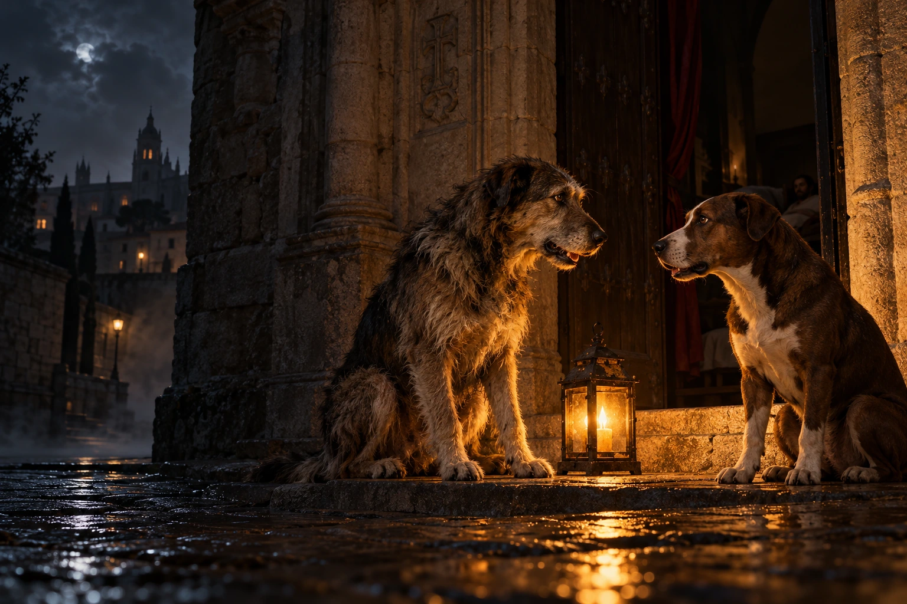
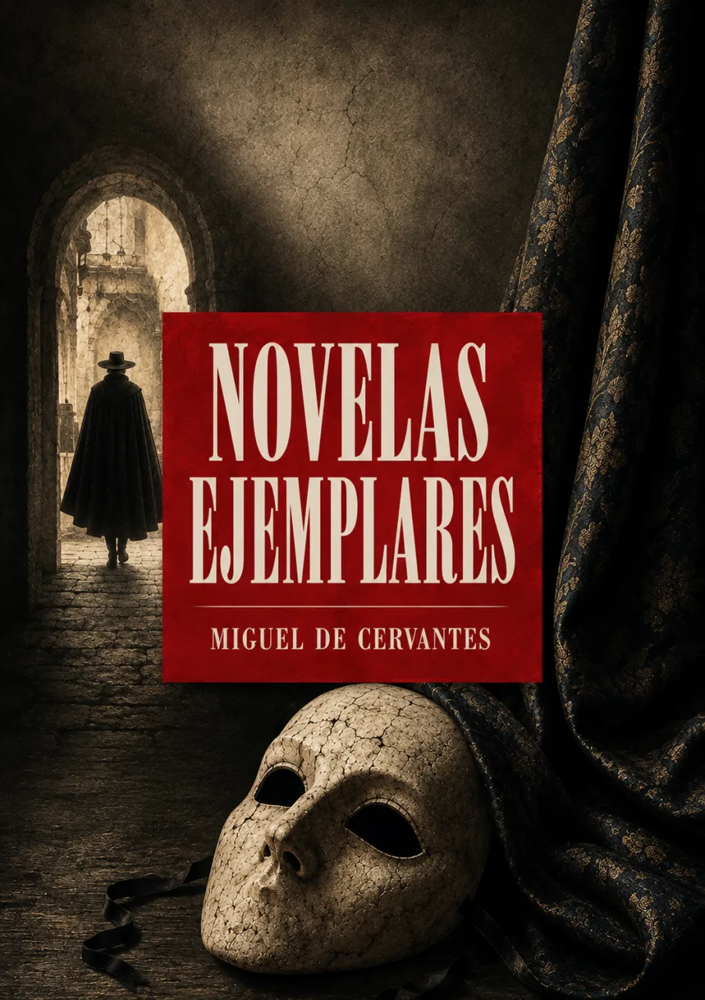

Audiolibros · Segunda Ola
Miguel de Cervantes · Primera publicación: 1613
Novelas
ejemplares
Esta noche, los perros tienen la palabra.
La ciudad duerme.
Quienes la han visto desde abajo empiezan a contar.

Escuchar al margen cambia el centro.
Grabación próximamente
Volumen

Doce formas de mirar una vida
Publicadas en 1613, las doce Novelas ejemplares reúnen aventuras, engaños, deseos y vidas que cruzan límites sociales. Cervantes hace de cada relato un espacio de prueba: las apariencias pueden desorientar y el juicio del lector rara vez encuentra un camino sencillo.
Cuando hablan los perros, los humanos quedan al descubierto.
La imagen elige el encuentro nocturno de Cipión y Berganza, los perros del Hospital de la Resurrección de Valladolid. Su conversación transforma la experiencia de servir a distintos amos en una mirada sobre la conducta humana. La arquitectura, el aspecto de los animales y la iluminación son recreaciones artísticas.
Primera publicación: 1613. Colección completa · Biblioteca Virtual Miguel de Cervantes. Escena de referencia · El coloquio de los perros.
La lectura
La gitanilla
El amante liberal
Rinconete y Cortadillo
La española inglesa
El licenciado Vidriera
La fuerza de la sangre
El celoso extremeño
La ilustre fregona
Las dos doncellas
La señora Cornelia
El casamiento engañoso
El coloquio de los perros
Grabación próximamente. La lectura de la obra estará disponible aquí. Las grabaciones se incorporarán cuando estén preparadas.
Valoración

Bueno